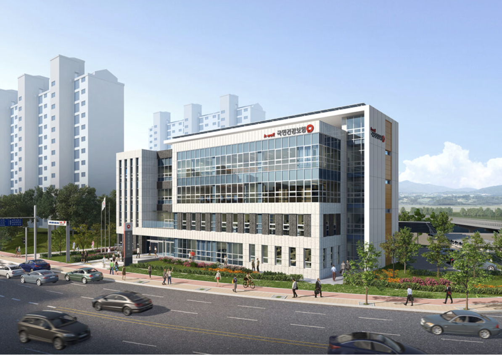

건강보험
Last Updated:
12월 2, 2022
health
(2)
본인부담환급금 의료비 환급 신청방법
12월 2, 2022

건강보험 환급금 신청하기
11월 30, 2022
Featured
본인부담환급금 의료비 환급 신청방법
12월 2, 2022
Authors
health
Post: 2
Newsletter
Sign up to receive email updates and to hear what's going on with us!
...